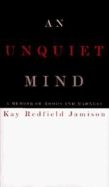

An Unquiet Mind: A Memoir of Moods and Madness
Book·Kay Redfield Jamison, 1995·躁郁之心

A clinical psychologist writes from personal experience about bipolar disorder, diagnosis and treatment.
- Author
- Kay Redfield Jamison
- Year
- 1995
- Difficulty
- Beginner
- Kind
- Biography
- Schools
- Modern Psychiatric Classification
Editions
- Chinese edition 《躁郁之心》 [美] 凯·雷德菲尔德·杰米森 / [美] 凯·雷德菲尔德·杰米森 · tr. 聂晶 · 浙江人民出版社 · 2018 Douban 7.8 (1340 ratings) Douban page ↗
- English edition An Unquiet Mind: A Memoir of Moods and Madness Kay Redfield Jamison · Knopf, first edition · 1995 Open Library ↗